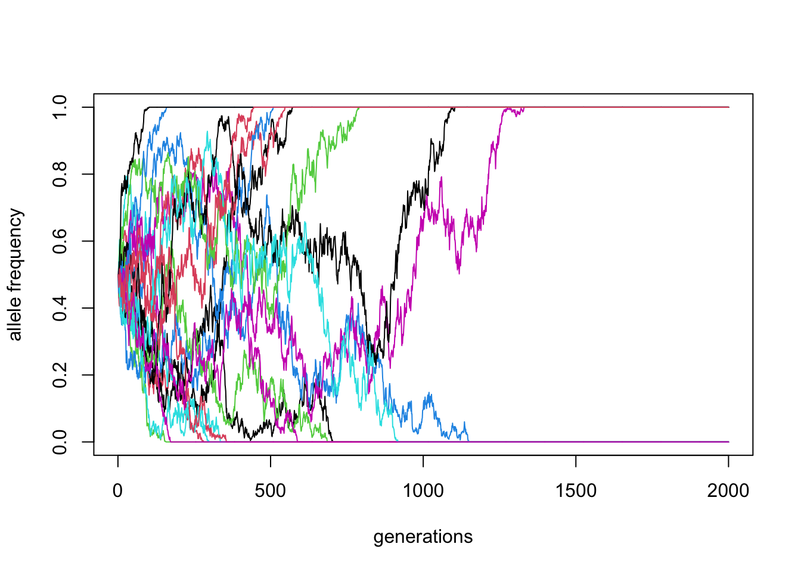
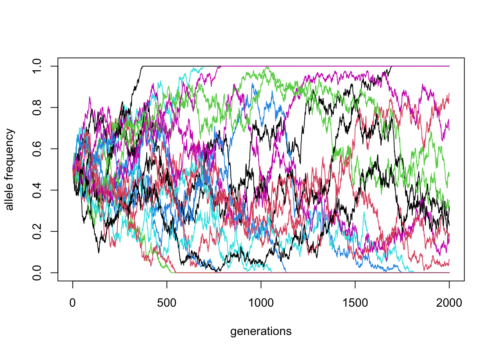
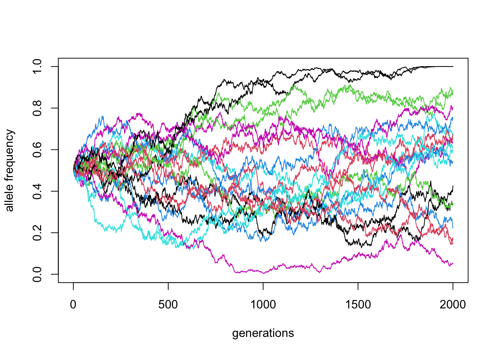
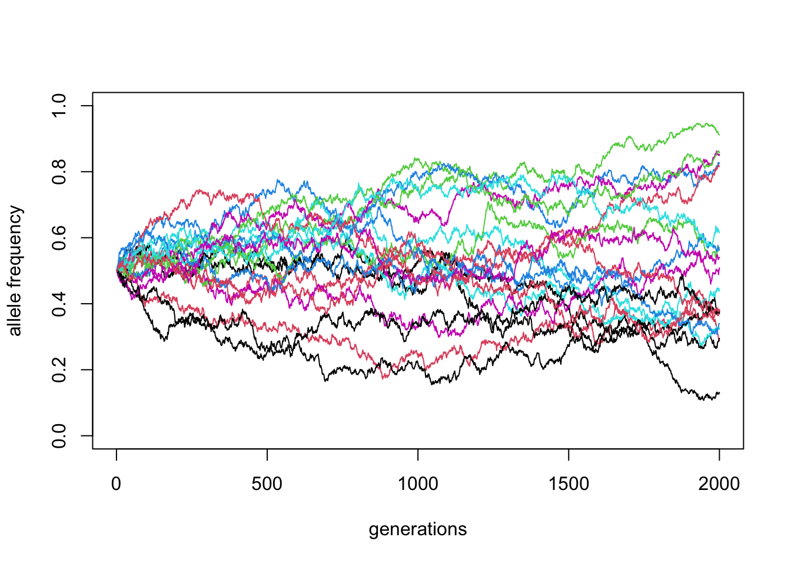
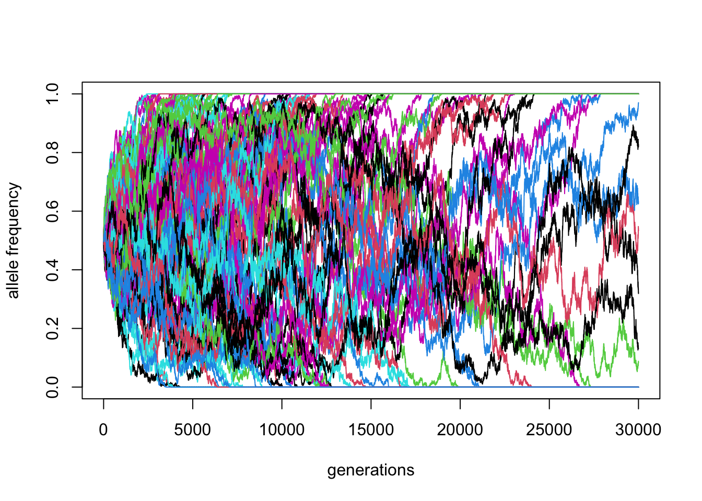
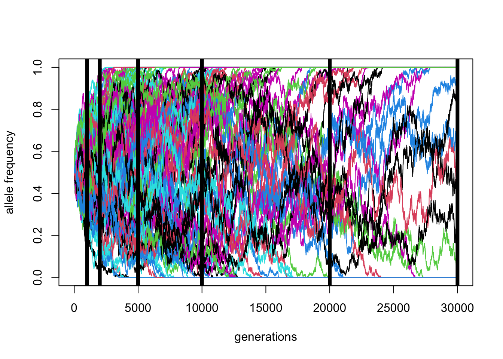

library(slendr)
setup_env(agree = TRUE)Simulations in population genetics
First things first
These slides and other resources are (and always will be) at:
github.com/bodkan/ku-popgen2023
Open this link now so you have everything at hand later.
First things first
In order to make sure you can do the exercises, you should log into your online RStudio session and run this in your R console:
If you want to do the exercises on your own laptop (if you can, you should), you need to do this first before running the above:
install.packages("slendr")Many problems in population genetics cannot be solved by a mathematician, no matter how gifted. [It] is already clear that computer methods are very powerful. This is good. It […] permits people with limited mathematical knowledge to work on important problems […].

Why use simulations?
- Making sense of inferred statistics
- Fitting model parameters (i.e. ABC)
- Ground truth for method development
Making sense of inferred statistics

Image from Peter (2016)
Fitting model parameters (i.e. ABC)

Image from Wikipedia on ABC
Ground truth for method development

Image from Schiffels and Durbin (2014)
What does it mean to simulate a genome?
How would you design an algorithm for a popgen simulation?
What minimum components are needed?
If we want to simulate population genetics
. . .
We need populations.
. . .
We need genetics.
The ‘genetics’ part…
. . .
…a linear sequence of nucleotides (a chromosome)
- a list of characters (A/G/C/T nucleotides)
- a list of 0 or 1 values (ancestral/derived allele),
. . .
which (maybe) mutates at a given mutation rate,
and (maybe) recombines at a certain recombination rate.
The ‘population’ part…
. . .
… a collection of individuals at a given point in time,
each carrying chromosomes inherited from its parents.
Single-locus
Wright-Fisher
simulation in R
“What is the expected trajectory of a neutral allele under the influence of genetic drift?”
From Fernando’s lecture on Monday…
A complete Wright-Fisher simulation
p_0 <- 0.5 # initial allele frequency ("50% marbles" from lecture #1)
N <- 500 # number of chromosomes in a population
T <- 500 # number of generations to simulate
# a vector for storing frequencies over time
p_trajectory <- p_0
# in each generation:
for (gen_i in 2:T) {
# get frequency in the previous generation
p_prev <- p_trajectory[gen_i - 1]
# calculate new frequency ("sampling marbles from a jar")
p_trajectory[gen_i] <- rbinom(1, N, p_prev) / N
}
plot(p_trajectory)\(N\) = 500, \(p_0 = 0.5\)
Code
plot(p_trajectory, type = "l", ylim = c(0, 1),
xlab = "generations", ylab = "allele frequency")
abline(h = p_0, lty = 2, col = "red")
Let’s make it a function
Input: \(p_0\), \(N\), and the number of generations
Output: allele frequency trajectory vector
\(N\) = 500, \(p_0 = 0.5\) (20 replicates)
Code
reps <- replicate(20, simulate(N = 500, p_0 = 0.5, T = 2000))
matplot(reps, ylim = c(0, 1), xlab = "generations", ylab = "allele frequency", type = "l", lty = 1)
\(N\) = 1000, \(p_0 = 0.5\) (20 replicates)
Code
reps <- replicate(20, simulate(N = 1000, p_0 = 0.5, T = 2000))
matplot(reps, ylim = c(0, 1), xlab = "generations", ylab = "allele frequency", type = "l", lty = 1)
\(N\) = 5000, \(p_0 = 0.5\) (20 replicates)
Code
reps <- replicate(20, simulate(N = 5000, p_0 = 0.5, T = 2000))
matplot(reps, ylim = c(0, 1), xlab = "generations", ylab = "allele frequency", type = "l", lty = 1)
\(N\) = 10000, \(p_0 = 0.5\) (20 replicates)
Code
reps <- replicate(20, simulate(N = 10000, p_0 = 0.5, T = 2000))
matplot(reps, ylim = c(0, 1), xlab = "generations", ylab = "allele frequency", type = "l", lty = 1)
\(N\) = 10000, \(p_0 = 0.5\) (100 replicates)
Code
reps <- replicate(100, simulate(N = 10000, p_0 = 0.5, T = 30000))
matplot(reps, ylim = c(0, 1), xlab = "generations", ylab = "allele frequency", type = "l", lty = 1)
\(N\) = 10000, \(p_0 = 0.5\) (100 replicates)
Code
factors <- MASS::fractions(c(3, 2, 1, 1/2, 1/5, 1/10))
matplot(reps, ylim = c(0, 1), xlab = "generations", ylab = "allele frequency", type = "l", lty = 1)
abline(v = 10000 * factors, lwd = 5)
Expected allele frequency distribution
Code
library(ggplot2)
library(dplyr)
Attaching package: 'dplyr'The following objects are masked from 'package:stats':
filter, lagThe following objects are masked from 'package:base':
intersect, setdiff, setequal, unionCode
library(parallel)
if (!file.exists("diffusion.rds")) {
p_0 <- 0.5
N <- 10000
factors <- MASS::fractions(c(3, 2, 1, 1/2, 1/5, 1/10))
final_frequencies <- parallel::mclapply(
seq_along(factors), function(i) {
f <- factors[i]
t <- as.integer(N * f)
# get complete trajectories as a matrix (each column a single trajectory)
reps <- replicate(10000, simulate(N = N, p_0 = p_0, T = t))
# only keep the last slice of the matrix with the final frequencies
data.frame(
t = sprintf("t = %s * N", f),
freq = reps[t, ]
)
},
mc.cores = parallel::detectCores()
) %>% do.call(rbind, .)
final_frequencies$t <- forcats::fct_rev(forcats::fct_relevel(final_frequencies$t, sprintf("t = %s * N", factors)))
saveRDS(final_frequencies, "diffusion.rds")
} else {
final_frequencies <- readRDS("diffusion.rds")
}
final_frequencies %>% .[.$freq > 0 & .$freq < 1, ] %>%
ggplot() +
geom_histogram(aes(freq, y = after_stat(density), fill = t), position = "identity", bins = 100, alpha = 0.75) +
labs(x = "allele frequency") +
coord_cartesian(ylim = c(0, 3)) +
facet_grid(t ~ .) +
guides(fill = guide_legend(sprintf("time since\nthe start\n[assuming\nN = %s]", N))) +
theme_minimal() +
theme(strip.text.y = element_blank(),
axis.title.x = element_text(size = 15),
axis.title.y = element_text(size = 15),
axis.text.x = element_text(size = 15),
axis.text.y = element_text(size = 15),
legend.title = element_text(size = 15),
legend.text = element_text(size = 15))

But now for something
completely different.
Let’s talk about
real simulations.
There are many simulation tools
The most famous and widely used are SLiM and msprime.
They are very powerful but both require:
- quite a bit of programming knowledge,
- a lot of code for non-trivial simulations (üêõü™≤üêú).
The exercises will focus on the slendr
popgen simulation toolkit for R.
What is SLiM?
- A forward-time simulator
- It’s fully programmable!
- Massive library of functions for:
- demographic events
- various mating systems
- selection, quantitative traits, …
- > 700 pages long manual!

Simple neutral simulation in SLiM
initialize() {
// create a neutral mutation type
initializeMutationType("m1", 0.5, "f", 0.0);
// initialize 1Mb segment
initializeGenomicElementType("g1", m1, 1.0);
initializeGenomicElement(g1, 0, 999999);
// set mutation rate and recombination rate of the segment
initializeMutationRate(1e-8);
initializeRecombinationRate(1e-8);
}
// create an ancestral population p1 of 10000 diploid individuals
1 early() { sim.addSubpop("p1", 10000); }
// in generation 1000, create two daughter populations p2 and p3
1000 early() {
sim.addSubpopSplit("p2", 5000, p1);
sim.addSubpopSplit("p3", 1000, p1);
}
// in generation 10000, stop the simulation and save 100 individuals
// from p2 and p3 to a VCF file
10000 late() {
p2_subset = sample(p2.individuals, 100);
p3_subset = sample(p3.individuals, 100);
c(p2_subset, p3_subset).genomes.outputVCF("/tmp/slim_output.vcf.gz");
sim.simulationFinished();
catn("DONE!");
}What is msprime?
- A Python module for writing coalescent simulations
- Extremely fast (genome-scale, population-scale data)
- You must know Python fairly well to build complex models

Simple simulation using msprime
import msprime
demography = msprime.Demography()
demography.add_population(name="A", initial_size=10_000)
demography.add_population(name="B", initial_size=5_000)
demography.add_population(name="C", initial_size=1_000)
demography.add_population_split(time=1000, derived=["A", "B"], ancestral="C")
ts = msprime.sim_ancestry(
sequence_length=10e6,
recombination_rate=1e-8,
samples={"A": 100, "B": 100},
demography=demography
)www.slendr.net

Why a new package?
Spatial simulations!

Why a new package?
Most researchers are not expert programmers
All but the most trivial simulations require lots of code
90% [citation needed] of simulations are basically the same!
create populations (splits and \(N_e\) changes)
specify if/how they should mix (rates and times)
- Lot of code duplication across projects
and unlocks new kinds of spatial simulations
Let’s get started
Everything we do will be in R
Always start your R scripts with this (*):
library(slendr)The legacy packages maptools, rgdal, and rgeos, underpinning the sp package,
which was just loaded, will retire in October 2023.
Please refer to R-spatial evolution reports for details, especially
https://r-spatial.org/r/2023/05/15/evolution4.html.
It may be desirable to make the sf package available;
package maintainers should consider adding sf to Suggests:.
The sp package is now running under evolution status 2
(status 2 uses the sf package in place of rgdal)init_env()The interface to all required Python modules has been activated.My solutions will also use these two packages:
library(ggplot2)
library(dplyr)(*) You can safely ignore the message about missing SLiM.
Typical steps of a slendr R workflow
- creating populations
- scheduling population splits
- programming \(N_e\) size changes
- encoding gene-flow events
- simulation sequence of a given size
- computing statistics from simulated outputs
Creating a population()
Each needs a name, size and time of appearance (i.e., “split”):
pop1 <- population("pop1", N = 1000, time = 1). . .
This creates a normal R object. Typing it out gives a summary:
pop1slendr 'population' object
--------------------------
name: pop1
non-spatial population
stays until the end of the simulation
population history overview:
- time 1: created as an ancestral population (N = 1000)Programming population splits
Splits are indicated by the parent = <pop> argument:
pop2 <- population("pop2", N = 100, time = 50, parent = pop1). . .
The split is reported in the “historical summary”:
pop2slendr 'population' object
--------------------------
name: pop2
non-spatial population
stays until the end of the simulation
population history overview:
- time 50: split from pop1 (N = 100)Scheduling resize events – resize()
Step size decrease:
Exponential increase:
Tidyverse-style pipe %>% interface
A more concise way to express the same thing as before.
Step size decrease:
pop1 <-
population("pop1", N = 1000, time = 1) %>%
resize(N = 100, time = 500, how = "step")Exponential increase:
pop2 <-
population("pop2", N = 1000, time = 1) %>%
resize(N = 10000, time = 500, end = 2000, how = "exponential")A more complex model
pop1 <- population("pop1", N = 1000, time = 1)
pop2 <-
population("pop2", N = 1000, time = 300, parent = pop1) %>%
resize(N = 100, how = "step", time = 1000)
pop3 <-
population("pop3", N = 1000, time = 400, parent = pop2) %>%
resize(N = 2500, how = "step", time = 800)
pop4 <-
population("pop4", N = 1500, time = 500, parent = pop3) %>%
resize(N = 700, how = "exponential", time = 1200, end = 2000)
pop5 <-
population("pop5", N = 100, time = 600, parent = pop4) %>%
resize(N = 50, how = "step", time = 900) %>%
resize(N = 1000, how = "exponential", time = 1600, end = 2200)Each object carries its history!
pop5slendr 'population' object
--------------------------
name: pop5
non-spatial population
stays until the end of the simulation
population history overview:
- time 600: split from pop4 (N = 100)
- time 900: resize from 100 to 50 individuals
- time 1600-2200: exponential resize from 50 to 1000 individualsLast step before simulation: compile_model()
model <- compile_model(
list(pop1, pop2, pop3, pop4, pop5),
generation_time = 1,
simulation_length = 3000
)Model summary
Typing the compiled model into R prints a brief summary:
modelslendr 'model' object
---------------------
populations: pop1, pop2, pop3, pop4, pop5
geneflow events: [no geneflow]
generation time: 1
time direction: forward
total running length: 3000 model time units
model type: non-spatial
configuration files in: /private/var/folders/d_/hblb15pd3b94rg0v35920wd80000gn/T/RtmprrhY6k/filee23c6b232dc7 Model visualization
plot_model(model)Exercise #1
Use these one-page handouts for reference.
Exercise #1: write this model in slendr

Start a model1.R script in RStudio with this “template”:
library(slendr)
init_env()
chimp <- population("CHIMP", time = 7e6, N = 5000)
# <... rest of your code ...>
model <- compile_model(
populations = list(chimp, ...),
generation_time = 30
)
plot_model(model) # verify visuallyNote: With slendr, you can specify events in more natural “units of years ago”. Just program times in a “decreasing order” (7Mya → 6Mya → …, as shown in the picture above).
Exercise #1: solution
See ex1.R on GitHub for a solution.
So, now we can
write a model
How do we simulate from it?
slendr has two built-in simulation “engine scripts”:
They are designed to understand slendr models.
. . .
All you need to simulate data is this one line of code:
ts <- msprime(model, sequence_length = 100e6, recombination_rate = 1e-8)You don’t have to write msprime or SLiM code!
The output of a slendr simulation is a tree sequence (ts)
What is tree sequence?

- a record of full genetic ancestry of a set of samples
- an encoding of DNA sequence carried by those samples
- an efficient analysis framework
Why tree sequence?
Why not VCF or a normal genotype table?
What we usually have

What we usually want
An understanding of our samples’ evolutionary history:
This is exactly what a tree sequence is!
The magic of tree sequences
They allow computing of popgen statistics without genotypes!
There is a “duality” between mutations and branch lengths.
See an amazing paper by Ralph et al. (2020) for more detail.
What if we need mutations though?
Coalescent and mutation processes can be decoupled!
What if we need mutations though?
Coalescent and mutation processes can be decoupled!

With slendr, we can add mutations after the simulation using ts_mutate().
Let’s take the model from earlier…

… and simulate data from it
In our script we’ll have something like this:
… and simulate data from it
In our script we’ll have something like this:
Now we can simulate data.
How do we work with this ts thing?
slendr’s R interface to tskit statistics

Allele-frequecy spectrum, nucleotide diversity \(\pi\), \(F_{ST}\), etc.
Extracting sample information
We can get samples recorded in ts with ts_samples():
ts_samples(ts)# A tibble: 5 × 3
name time pop
<chr> <dbl> <chr>
1 pop1_1 0 pop1
2 pop1_2 0 pop1
3 pop1_3 0 pop1
4 pop1_4 0 pop1
5 pop1_5 0 pop1 . . .
Sometimes a shortcut ts_names() can be useful:
ts_names(ts)[1] "pop1_1" "pop1_2" "pop1_3" "pop1_4" "pop1_5"Example: allele frequency spectrum
Sample 5 individuals:
names <- ts_names(ts)[1:5]
names[1] "pop_1" "pop_2" "pop_3" "pop_4" "pop_5"Compute the AFS:
afs <- ts_afs(ts, list(names))
afs[-1] [1] 3774 1887 1385 1054 701 666 553 438 469 423
plot(afs[-1], type = "b",
xlab = "allele count bin",
ylab = "frequency") Note: We drop the first element (afs[-1]) technical reasons related to tskit. You don’t have to worry about that here, but you can read this for more detail.
Exercise #2
Use these one-page handouts for reference.
Exercise #2: estimating \(N_e\) from AFS
Imagine you sequenced 10 samples from a population and computed this AFS vector (# singletons, doubletons, etc.):
afs_observed <- c(2520, 1449, 855, 622, 530, 446, 365, 334, 349, 244,
264, 218, 133, 173, 159, 142, 167, 129, 125, 143). . .
You know that the population had constant \(N_e\) somewhere between 1000 and 30000 for the past 100,000 generations, and had mutation and recombination rates of 1e-8.
. . .
Try to guess the true \(N_e\) given the observed AFS by running single-population simulations for a range of \(N_e\) values and comparing ts_afs() results to afs_observed.
Exercise #2: hints
- Write a function (in a new script
model2.R) takingNeas a parameter. It should create one population, compile a model, runts_afs()for 10 samples, and return the AFS.
If we call it simulate_afs(), it should work like this (your numbers will be different, of course!):
simulate_afs(Ne = 1000) [1] 4000 2000 1333 1000 800 667 571 500 444 400 364simulate_afs(Ne = 12000) [1] 48000 24000 16000 12000 9600 8000 6857 6000 5333 4800 4364[Don’t panic—you can pretty much just tweak bits of my earlier example code.]
Exercise #2: hints
Using your custom
simulate_afs()function, find the value ofNethat will give the closest AFS to the observed AFS:option #1 [easy]: Plot AFS vectors for various \(N_e\) values, then eyeball which looks closest to the observed AFS
option #2 [harder]: Simulate AFS vectors in steps of possible
Ne(maybelapply()?), find the closest AFS
Exercise #2: hints
If you’re completely lost, you can start from this “template” again:
library(slendr)
init_env()
simulate_afs <- function(Ne) {
<... AFS simulation code you cannibalized from my slides ...>
}
afs_1k <- simulate_afs(Ne = 1000)
afs_12k <- simulate_afs(Ne = 12000)
<...>
<... some plotting or statistics ...>Exercise #2: solution
See ex2_simple.R for a simple “eyeballing” solution.
See ex2_grid.R for a more elaborate grid-search solution.
Gene flow / admixture
We use the function gene_flow()
If we have populations p1 and p2, we schedule gene flow as:
gf <- gene_flow(from = p1, to = p2, start = 500, end = 600, rate = 0.13). . .
Multiple gene-flow events can be gathered in a list:
gf <- list(
gene_flow(from = p1, to = p2, start = 500, end = 600, rate = 0.13),
gene_flow(from = ..., to = ..., start = ..., end = ..., rate = ...),
...
). . .
gene_flow() checks for consistency!
Plugging gene flow(s) into a model
If you have a slendr script, you can do this:
<... population() definitions ...>
gf <- list(
gene_flow(from = ... to = ..., start = ..., end = ..., rate = ...),
gene_flow(from = ..., to = ..., start = ..., end = ..., rate = ...),
...
)
model <- compile_model(
populations = list(...),
gene_flow = gf, # <--- gene flow(s) specified
generation_time = <...>
)Exercise #3
Use these one-page handouts for reference.
Exercise #3: adding gene flow
Add NEA → EUR introgression to your model1.R script:

Exercise #3: adding gene flow
Add NEA → EUR introgression to your model1.R script:
3% pulse (rate = 0.03) between 55-50 kya (start-end)
Exercise #3: solution
See ex3_ex4.R script on GitHub for a solution.
Exercise #4
Use these one-page handouts for reference.
Exercise #4: more statistics!
Simulate a ts tree sequence from your complete Neanderthal introgression model in model1.R.

(Remember to add mutations with ts_mutate().)
Exercise #4: more statistics!
Compute (some of) these on your tree sequence:
nucleotide
ts_diversity()in each populationts_divergence()between populationsts_fst()between populationsoutgroup
ts_f3()using CHIMP as the outgroup (A!) for different pairs of “B” and “C” populationsts_f4()test of Neanderthal introgression in EUR[hint: \(f_4\)(<AFR>, <EUR>; <NEAND>, <CHIMP>)]
Exercise #4: hint
For multipopulation statistics, you need a (named) list of samples recorded in each population.
ts_names() has a split = "pop" option just for this:
samples <- ts_names(ts, split = "pop")
samples$AFR
[1] "AFR_1" "AFR_2" "AFR_3"
$NEA
[1] "NEA_1" "NEA_2" "NEA_3"You can use this in place of sample_names in code like:
ts_diversity(ts, sample_sets = samples)Exercise #4: solution
See ex3_ex4.R script on GitHub for a solution.
More information
slendr paper is now in PCI EvolBiol
documentation, tutorials is here
GitHub repo (bug reports!) is here
- check out my new demografr inference package
- contact details at bodkan.net
BONUS HOMEWORK
Time-series data
Sampling aDNA samples through time
Imagine we have pop1, pop2, … compiled in a model.
To record ancient individuals in the tree sequence, we can use schedule_sampling() like this:
schedule_sampling(
model, # compiled slendr model object
times = c(100, 500), # at these times (can be also a single number) ...
list(pop1, 42), # ... sample 42 individuals from pop1
list(pop2, 10), # ... sample 10 individuals from pop2
list(pop3, 1) # ... sample 1 individual from pop 3
) Sampling schedule format
The output of schedule_sampling() is a plain data frame:
schedule_sampling(model, times = c(40000, 30000, 20000, 10000), list(eur, 1))# A tibble: 4 × 7
time pop n y_orig x_orig y x
<int> <chr> <int> <lgl> <lgl> <lgl> <lgl>
1 10000 EUR 1 NA NA NA NA
2 20000 EUR 1 NA NA NA NA
3 30000 EUR 1 NA NA NA NA
4 40000 EUR 1 NA NA NA NA . . .
We can bind multiple sampling schedules together, giving us finer control about sampling:
eur_samples <- schedule_sampling(model, times = c(40000, 30000, 20000, 10000, 0), list(eur, 1))
afr_samples <- schedule_sampling(model, times = 0, list(afr, 1))
samples <- bind_rows(eur_samples, afr_samples)How to use a sampling schedule?
To sample individuals based on a given schedule, we use the samples = argument of the msprime() functions:
ts <- msprime(model, samples = samples, sequence_length = 1e6, recombination_rate = 1e-8) %>%
ts_mutate(mutation_rate = 1e-8). . .
We can verify that only specific individuals are recorded:
ts_samples(ts)# A tibble: 6 × 3
name time pop
<chr> <dbl> <chr>
1 EUR_1 40000 EUR
2 EUR_2 30000 EUR
3 EUR_3 20000 EUR
4 EUR_4 10000 EUR
5 AFR_1 0 AFR
6 EUR_5 0 EUR ts╔═══════════════════════════╗
║TreeSequence ║
╠═══════════════╤═══════════╣
║Trees │ 1279║
╟───────────────┼───────────╢
║Sequence Length│ 1000000║
╟───────────────┼───────────╢
║Time Units │generations║
╟───────────────┼───────────╢
║Sample Nodes │ 12║
╟───────────────┼───────────╢
║Total Size │ 280.9 KiB║
╚═══════════════╧═══════════╝
╔═══════════╤════╤═════════╤════════════╗
║Table │Rows│Size │Has Metadata║
╠═══════════╪════╪═════════╪════════════╣
║Edges │3927│122.7 KiB│ No║
╟───────────┼────┼─────────┼────────────╢
║Individuals│ 6│192 Bytes│ No║
╟───────────┼────┼─────────┼────────────╢
║Migrations │ 0│ 8 Bytes│ No║
╟───────────┼────┼─────────┼────────────╢
║Mutations │1617│ 58.4 KiB│ No║
╟───────────┼────┼─────────┼────────────╢
║Nodes │ 913│ 25.0 KiB│ No║
╟───────────┼────┼─────────┼────────────╢
║Populations│ 4│341 Bytes│ Yes║
╟───────────┼────┼─────────┼────────────╢
║Provenances│ 2│ 3.5 KiB│ No║
╟───────────┼────┼─────────┼────────────╢
║Sites │1616│ 39.5 KiB│ No║
╚═══════════╧════╧═════════╧════════════╝Exercise #5
Use these one-page handouts for reference.
Exercise #5a: ancient samples
Let’s return to your introgression model:

Exercise #5a: ancient samples
Simulate data from your model using this sampling:
- one present-day CHIMP and AFR individual
- 20 present-day EUR individuals
- 1 NEA at 70 ky, 1 NEA at 40 ky
- 1 EUR every 1000 years between 50-5 kya
Reminder: you can do this by:
samples <- # rbind(...) together individual schedule_sampling() data frames
ts <-
msprime(model, samples = samples, sequence_length = 100e6, recombination_rate = 1e-8) %>%
ts_mutate(mutation_rate = 1e-8)Exercise #5b: \(f_4\)-ratio statistic
Use \(f_4\)-ratio statistic to replicate the following figure:

Hint: You can compute Neanderthal ancestry for a vector of individuals X as ts_f4ratio(ts, X = X, "NEA_1", "NEA_2", "AFR_1", "CHIMP_1").
Exercise #5: solution
See ex5.R script on GitHub for a solution.
Standard genotype formats
If a tree sequence doesn’t cut it, you can always:
- export genotypes to a VCF file:
ts_vcf(ts, path = "path/to/a/file.vcf.gz")- export genotypes in an EIGENSTRAT format:
ts_eigenstrat(ts, prefix = "path/to/eigenstrat/prefix")- access genotypes in a data frame:
ts_genotypes(ts) pos EUR_1_chr1 EUR_1_chr2 EUR_2_chr1 EUR_2_chr2 AFR_1_chr1 AFR_1_chr2
1 2945 0 0 1 0 0 0
2 3307 0 0 0 1 0 0
3 3535 0 0 0 1 1 0
4 5137 0 0 1 0 0 0
5 6014 0 0 0 1 1 0